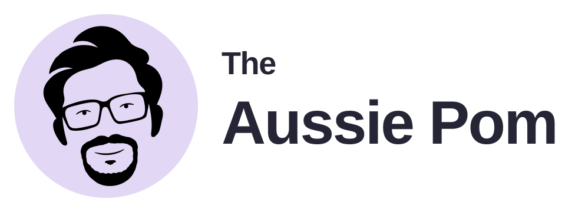
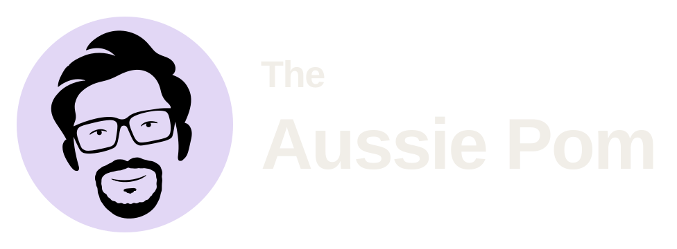
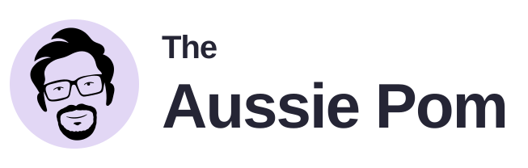
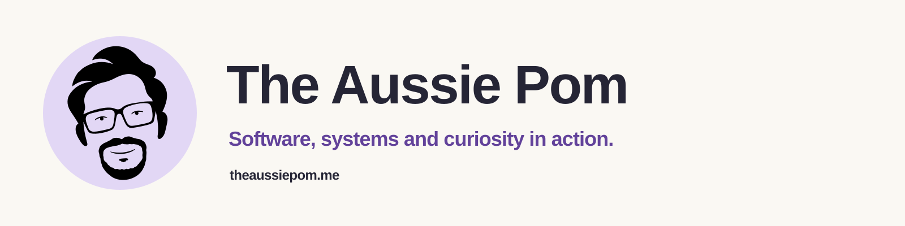
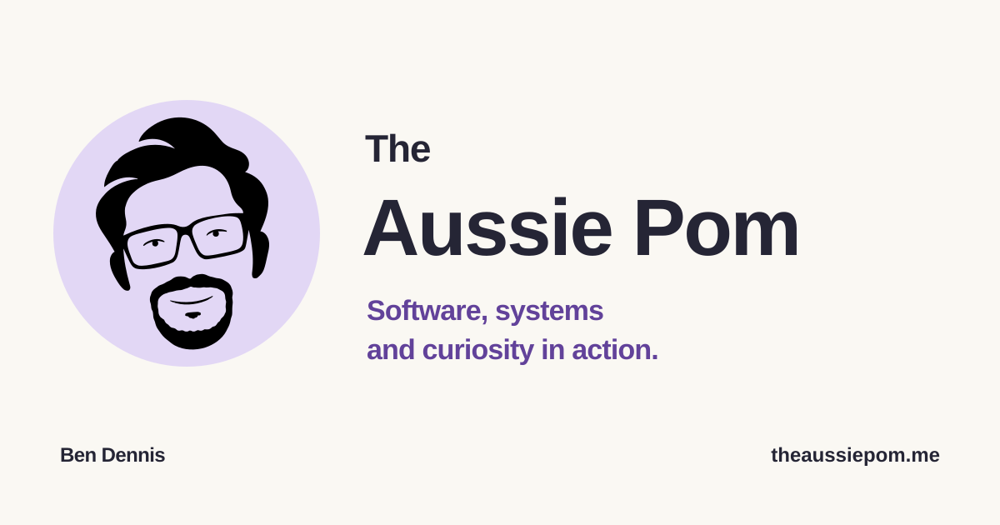
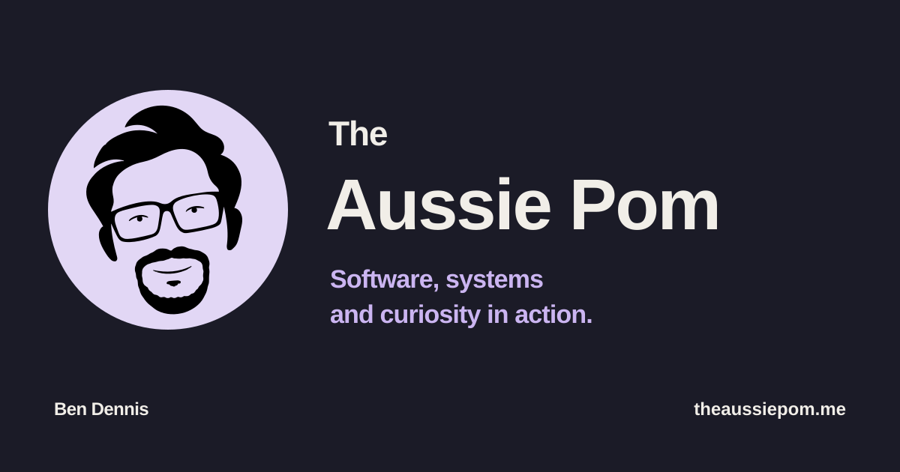
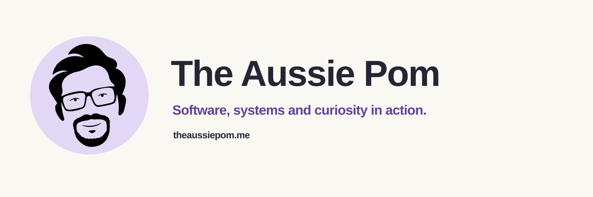
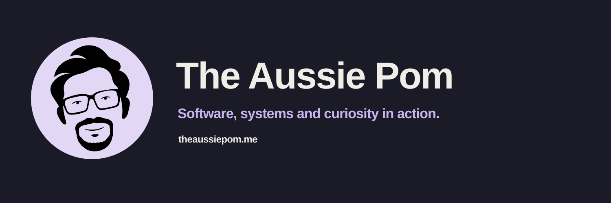
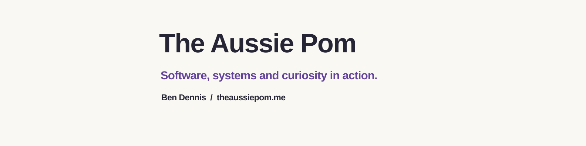

The Aussie Pom
Software, systems and curiosity in action.
A new name across the suite, with the approved portrait preserved. Main logos retain the black face on lilac in both themes. Browser favicons retain their white circle and transparent corners.
Primary identity


Header at intended display size
Compact header and wordmark

Portrait and micro portrait
Main portrait · subtle eyes
Micro portrait · eyes omitted
Browser favicon
Solid white circle, transparent outside. View at 100% browser zoom to judge the labelled CSS sizes.


Apple touch and maskable icons are separate opaque-white home-screen assets. The browser favicon stays circular.
Profile avatars
1024 × 1024 PNGs, plus SVG originals. Square avatars suit platforms that apply their own circular crop.
Website banners

1600 × 400. Use where a wide masthead is needed.
Link previews


1200 × 630. Choose one default; article-specific previews remain separate.
Social covers


1500 × 500. Check the crop on the destination platform.
LinkedIn backgrounds

1584 × 396. Text is placed away from the profile-photo overlap area.
Palette
#FAF8F3
#252535
#62429A
#E2D7F5
#1B1B27
#F1EEE8
#CBB5F1
#332B46
Portrait ink: black (#000000). Favicon circle: white (#FFFFFF). Website fonts remain Arial/Helvetica and Georgia.
Formats
| Format | Use |
|---|---|
| SVG | Scalable web and editing assets; production lettering is outlined. |
| PNG | Social uploads, slides and raster-only applications. |
| Vector logo placement in print and layout applications. | |
| ICO | Browser fallback with 16, 32 and 48 px frames. |
Version 3.0 supersedes the earlier pack. Repository, website and social profiles have not been changed.